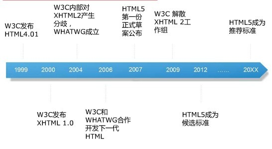

发送日期
2016年6月20日由：Admin
H5发展历程
2016年6月11日由: Admin
标准通用标记语言下的一个应用HTML标准自1999年12月发布的HTML4.01后，后继的HTML5和其它标准被束之高阁，为了推动Web标 准化运动的发展，一些公司联合起来，成立了一个叫做 Web Hypertext Application Technology Working Group （Web超文本应用技术工作组 -WHATWG） 的组织。WHATWG 致力于 Web 表单和应用程序，而W3C（World Wide Web Consortium，万维网联盟） 专注于XHTML2.0。在 2006 年，双方决定进行合作，来创建一个新版本的 HTML。
 更多...Copyrights © 2015 Blogging All rights reserved | Template by W3layouts